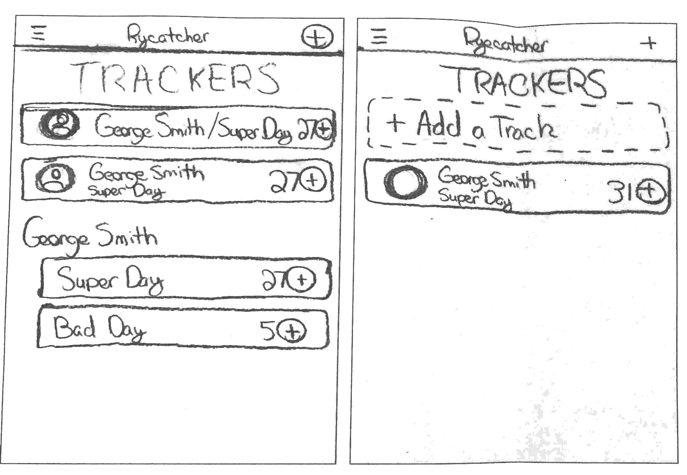
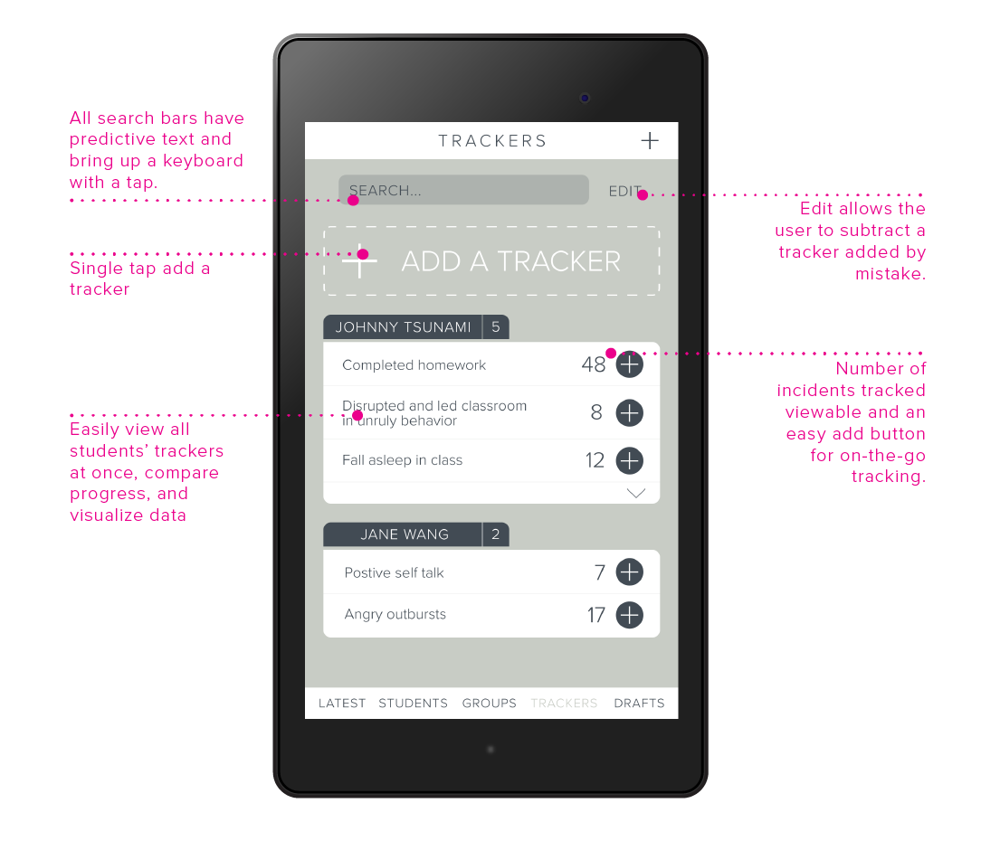

Designed the Ryecatcher mobile app, a task manager for busy teachers, social workers, and school administrators.
Dates: February 2017 - March 2017
Team: Scott Dombkowski, Victoria Costikyan, Monica Looze, and Hajira Qazi
Research
For this project, my team was tasked with translating functionality from an existing web application and optimizing features for use in a mobile context. In order to translate Ryecatcher into a mobile platform, our team wanted to first understand what was working well on the website. We reached out to two potential users, an administrator at a therapeutic school and a former school social worker. We gave these potential users a number of scenarios in which they interacted with the original Ryecatcher website. They provided some helpful insights from this research. For instance, we discovered that the website’s attendance-taking feature was misleading and the tracker functionality was unclear. These insights later guided how we addressed trackers and attendance taking in the app.
Existing Ryecatcher Web Screen
To acquaint ourselves with the Ryecatcher website, we explored Ryecatcher’s interface and walked ourselves through entering student information and notes. We analyzed our experiences with the interface and created lists of positive and negative factors. These insights inspired us to develop a solution that was simple, quick, easy, polite, and helpful. We used these words as guides for our ideation.
Ideation
After we came up with our initial concept, we started working on the overall architecture of the app. Discussions arose about how we would organize the app and what terminology we would use. We worked out a convention that included a landing page as a quick at-a-glance resource for teachers separated into action items, meetings, and “latest” updates which offered an easy and effective way to review what needed to be done that day. For the features of the app, we decided to focus on the latest page, students, trackers, and student groups. We determined that these pages were most important for teachers to access. We further developed these ideas through individual sketches and co-sketches.

Individual Sketch
Group Sketch
Refining Our Design Through Feedback
When it came time to present our wireframe progress to the client, we felt fairly confident in the architecture of our app. Our primary contact at Ryecatcher, Arthi, told us that she liked the overall experience, sections, and architectural decisions of our app. She liked the way that we had structured the latest page, however, she emphasized that the buckets (action items, meetings, and updates) we proposed need to be apparent to end users. She also pushed us to delve further into our note wizard system, especially in regards to how drafts and quick notes function. She wanted to know whether a saved draft becomes visible to other users. From our presentation with Arthi, we discovered that we hadn’t worked out the action items and drafts systems of our app as thoroughly as we thought. From Arthi’s feedback, we started working on a drafts panel as well as a draft summary page to function as a one-stop place for users to edit their notes.
We later conducted user testing (after improvements based on Aarthi's feedback) with Senchel, a former Ryecatcher user and current Ryecatcher employee. We worked as a team to create a list of testing prompts and questions for her. For example, one of our prompts was: “You gave your meeting a title, but you don’t have time to add in any other information because a class is starting. What do you do?”. Senchel answered all of our prompts correctly, so we concluded that our architecture was fairly straightforward and easy to navigate at first glance. After we took Senchel through our wireframes, we asked her for feedback. She liked the way that we had bucketed the latest page, but she expressed that there should be more information about each action displayed. At this time, we only had the title and time of each meeting.
Final Wireframes
We ended up building out screens for the following final user flow.
Ryecatcher Mobile App User Flow
Ryecatcher Latest and Tracker Screens
Ryecatcher Create Action Wizard and Wizard Confirmation Screens
Ryecatcher User and Attendance Screens
Latest Screen Deep Dive
The information architecture of the app follows our goals of creating a mobile application that is polite, clear, and simple. Time is also a major factor. We encourage users to update their oldest action items and keep everything else up-to-date. Tappable text throughout the app makes the navigation intuitive and uncluttered.
Ryecatcher Latest Screen w/ Annotations
Tracker Screen Deep Dive
All trackers are grouped together, creating easy and straight-forward data entry and visualizations for the user.

Ryecatcher Tracker Screen w/ Annotations
Action Wizard Screen Deep Dive
Users are walked politely through the creation of an action item using a wizard. Conventions insure the user has agency and is oriented at all times.
Ryecatcher Action Wizard Screen w/ Annotations
Attendance Screen Deep Dive
In addition to action item summaries, we created a way for users to quickly take attendance for their meetings. By tapping on attendance action items, the user is taken to this screen.
Ryecatcher Attendance Screen w/ Annotations